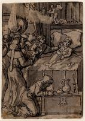
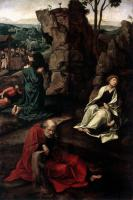
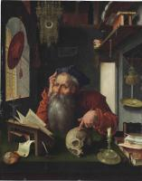

| Триптих
1525-50
|
|  | Вмираючий єпископ у ліжку з групою ченців
1527-50
|
|  | Агонія в саду
1527-30
|
 | Історія святого Павла - спалення книг в Ефесі
1529
|
 | Розп'яття
1530
|
|  | Святий Ієронім у своєму кабінеті
1530
|
 | Триптих
1530
|
 | Тайна вечеря
1531
|
 | Вівтар Страстей
1532-35
|
 | Зняття з хреста
1535
|
 | Триптих Зняття з хреста
1540-1545
|
 | Свята Трійця
|
 | Христос і Його учні на шляху до Емауса
|
 | Спокуса святого Антонія
|
 | Pietà
|
 | Триптих із Плачем
|
 | Триптих: Поклоніння волхвів
|